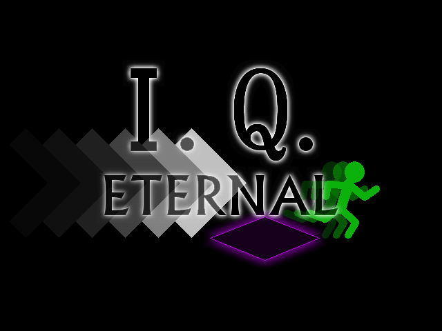

| No.52 | Ｉ．Ｑ．ＥＴＥＲＮＡＬ | 容量：9.71MB | |
|
 | ||||
| 作者：能無住民 | ジャンル：パズル 使用ツール：2000 | 配信：カ 動画：カロット | 感想掲示板 | |
| コメント： このパズルゲームにおいてあなたに消去していただく 加重ホワイト・キューブには痛覚を検知する機能は搭載されておりません。 加重ホワイト・キューブを消去する作業には倫理的な問題は生じないと 倫理学者の独立委員会の多数決によって結論付けられました。 この消去作業においては全ての被験者及び関係者の 倫理的な責任は免除されておりますので、ご安心ください。 | ||||
|
管理者からのコメント： これは良いパズルゲーの予感 | ||||
|
最近の更新： 8/18：本体＆パッチ更新。 8/16：提出。 8/8：公開。 | ||||